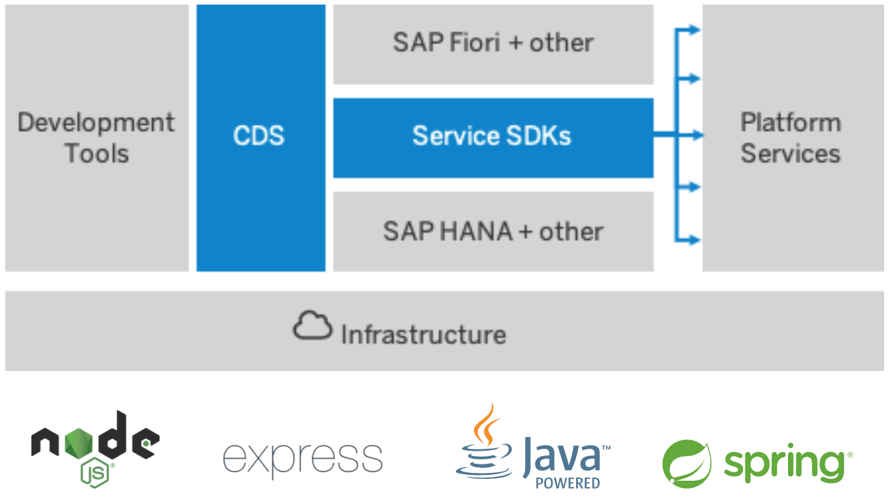

Getting started with CAP
SAP Cloud Application Programming Model
Gregor Wolf
From Capire the CAP documentation (https://cap.cloud.sap/)
The SAP Cloud Application Programming Model (CAP) is a framework of languages, libraries, and tools for building enterprise-grade services and applications. It guides developers along a 'golden path' of proven best practices and a great wealth of out-of-the-box solutions to recurring tasks.
CAP Architecture

CAP is Opinionated but also Open
| CAP is Opinionated in... | CAP is Open as... |
|---|---|
| Higher-level concepts and APIs abstracting from and avoiding lock-ins to low-level platform features and protocols | All abstractions follow a glass-box pattern that allows unrestricted access to lower-level things, if required |
| Best Practices served out-of-the-box with generic solutions for many recurring tasks | You can always handle things your way in custom handlers, decide whether to adopt CQRS or Event Sourcing, for example ... while CAP simply tries to get the tedious tasks out of your way. |
|
Out-of-the-box support for
SAP Fiori and SAP HANA |
You can also choose other UI technologies, like Vue.js, or databases, by providing new database integrations. |
| Dedicated tools support provided in SAP Business Application Studio, and Visual Studio Cod or Eclipse. | CAP doesn't depend on those tools. Everything in CAP can be done using the @sap/cds-dk CLI and any editor or IDE of your choice. |
Comparison
| Functionality | ABAP | CAP |
|---|---|---|
| IDE |
SE80 / ABAP in Eclipse aka. SAP ABAP Development Tools for Eclipse (AiE / ADT) |
SAP Business Application Studio (BAS) / VS Code / vim / ... |
| Data Definition | SE11 | CDS |
| OData Service Definition | SEGW / CDS | CDS |
| Custom Logic | ABAP | Java or JavaScript |
| OData Service Exposure | /IWFND/MAINT_SERVICE | cds watch / cds run |
| Test | /IWFND/GW_CLIENT | REST Client, curl, wget |
| Application Server |
SAP Application Server ABAP SAP BTP ABAP Environment (Steampunk) |
Java or Node.JS runtime in SAP BTP Cloud Foundry or SAP HANA XSA (on premise) So far not supported by SAP: Kubernetes (K8s) / Kyma Microsoft Azure |
| Database |
SAP DB’s: HANA, ASE, MaxDB Oracle, MS SQL Server, IBM DB2 |
Local development: sqlite Community Project cds-pg for PostgreSQL Check for changes at https://github.com/cap-js for new SQL Layer Production: SAP HANA |
Business Case
Self Service that allows
a Customer to lookup
Customer Material Info
from SAP S/4HANA (Cloud).
Preperation
Test APIs on api.sap.com:
Let's build it.

Using SAP Business Application Studio
or VS Code
Initialize CAP project
cds init <projectname>
Start CAP Backend
cds watch
Import OData Definitions
cds import <EDMX File> --keep-namespace --as cds
Test against remote service
npm add @sap-cloud-sdk/http-client@2.x @sap-cloud-sdk/util@2.x @sap-cloud-sdk/connectivity@2.x
Tips & Tricks
- Update to the latest CAP Release ASAP
- Use the latest Node.JS LTS Version
- Automate tests in Backend and Frontend
- Use CI/CD
Key Takeaways
SAP Cloud Application Programming Model (CAP)
- Short time to API and UI
- Available for Java and Node.JS
-
Supports SAP Business Technology Platform
and SAP HANA XSA on Premise
Contact
Gregor Wolf,
Computerservice Wolf
gregor@computerservice-wolf.com
| Presentation | Business Card | ||
|---|---|---|---|

|

|